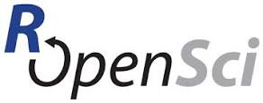
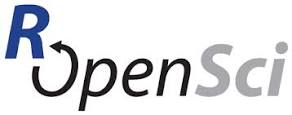

Iccarus Metamaterials Website
This blog on Wordpress contains the up-to-date commentary of my research done for my PhD at Queen Mary Unviersity of London. I am investigating using transformation optics and metamaterials in optical systems. I may also run some experiments on something interesting I've read. The contents of the my book run along the same lines of metamaterials simulations of invisibility cloaks and sub-wavelength imaging devices in matlab. Transformation optics is a fascinating technology which allows a device to be shaped arbitrarily maintaining any desired electromagnetic properties. Far out astrophysical pheneomenon have also been proposed such as artificial black holes where light spirals into the centre acting as an optical sink or energy harvester at microwave frequencies.
Programming
This contains my work with ROpenSci creating packages in for open science which promotes open data and using the R framework to promote free package distribution. I am Co-founder with Mobile App Sailo which is a social network for travellers kind of like a cross between tinder and Bla-bla-car. I also run an ecommerce site called Icarus Drones which sell the latest camera enabled personal drone tech
 

Beyond Materials: Invisibility and Perfect Imaging
Metamaterials were described as one of the top 10 scientific breakthroughs of the last decade by Science magazine. Metamaterials are a new paradigm in science. A modern day scientific revolution where a slight change in perception, as Einsteins slight reformulation of the laws of relativity has led to a whole new field in Physics. The technology has immediate applications to optics and antenna technology. Kymeta use metamaterials for flat space communication dishes. Kymeta has so far received 2 rounds of £50m funding from Bill Gates and was for two years running voted in the top 50 disruptive technologies by techcrunch disrupt.
Icarus Metamaterials
I was the finalist of the competition discovering startup's 2013 held by Cambridge wireless. This was based on a design for a conformal, all dielectric Luneberg lens design I did which was patented by BAE systems. This device allows broadband propagation of electromagnetic waves from satellite communications. This is a novel design for a device similiar to the technology used by American based startup Kymeta shown below.
Publications
Mt PhD was on Transformation Optics and Metamaterials. I worked with the QUEST platform grant. I presented my research at international conferences: META12 in Paris and EUCAP 2014 in Orlando Florida and at lead UK defence laboratory Porton Down. My research looks at applying transformation optics to designing optical systems and if by including gradient indices if it is possible to reduce the aberrations in the final image. Previous to this I completed my Masters at the University of Manchester on Physics where my final year project involved astrophysical simulations of Masers around Late type stars using Fortran and IDL and we discovered evidence for the existence of a radio photosphere near to the stellar surface. My PhD was completed at The School of Electronic Engineering and Computer Science at Queen Mary University of London under the supervision of Professor Yang Hao, Professor Clive Parini and Professor Ian Youngs (DSTL). Dr Malcom Grey supervised my masters thesis at The Centre for Astrophysics at The University of Manchester . I was funded partly by the EPRSC and partly by DSTL .